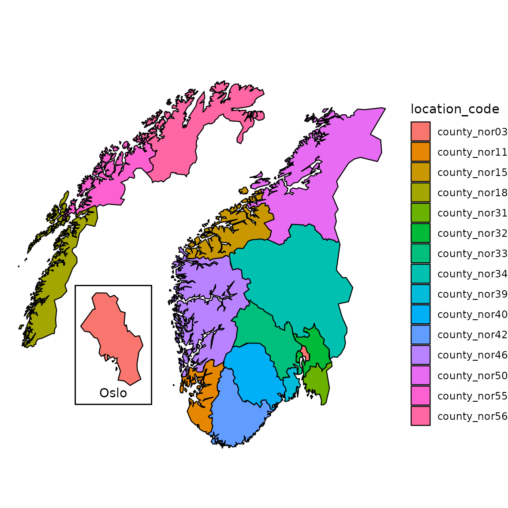
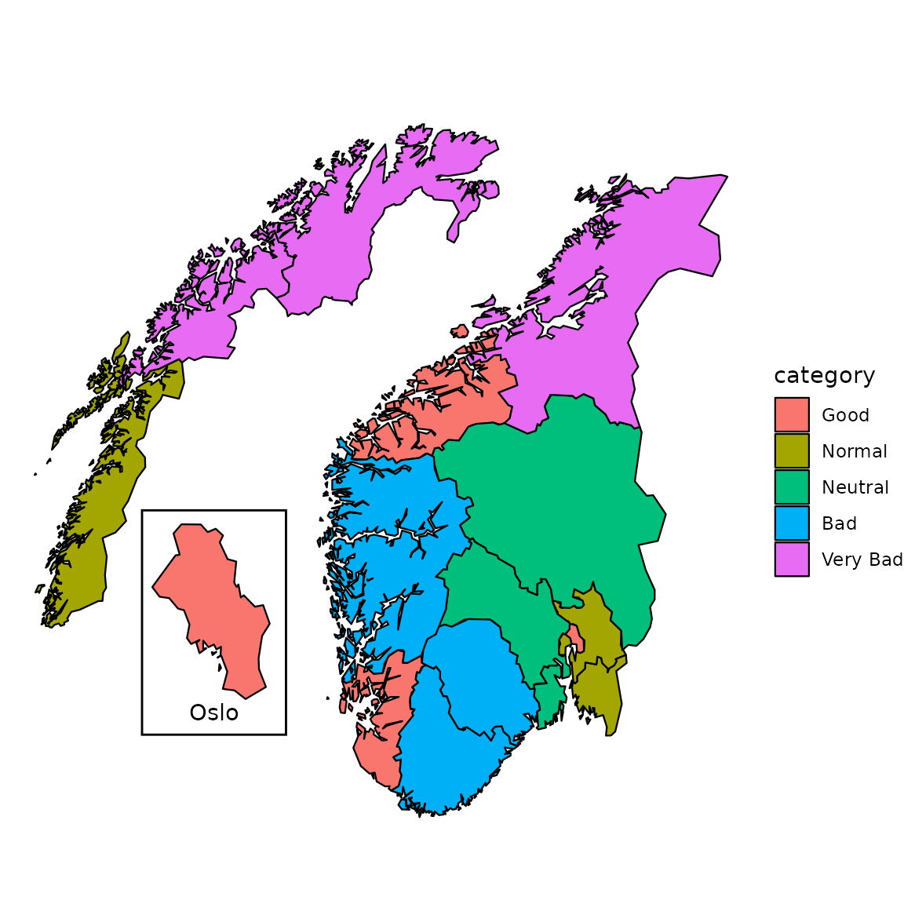
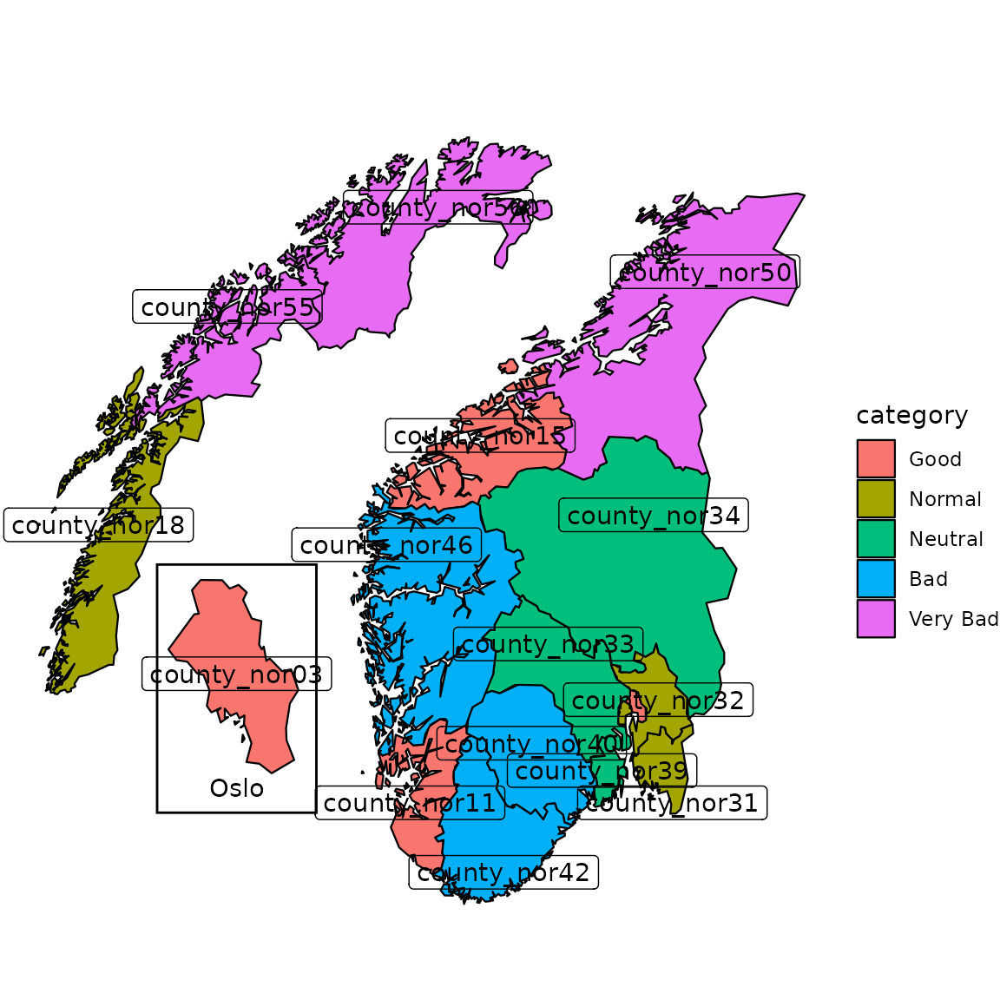
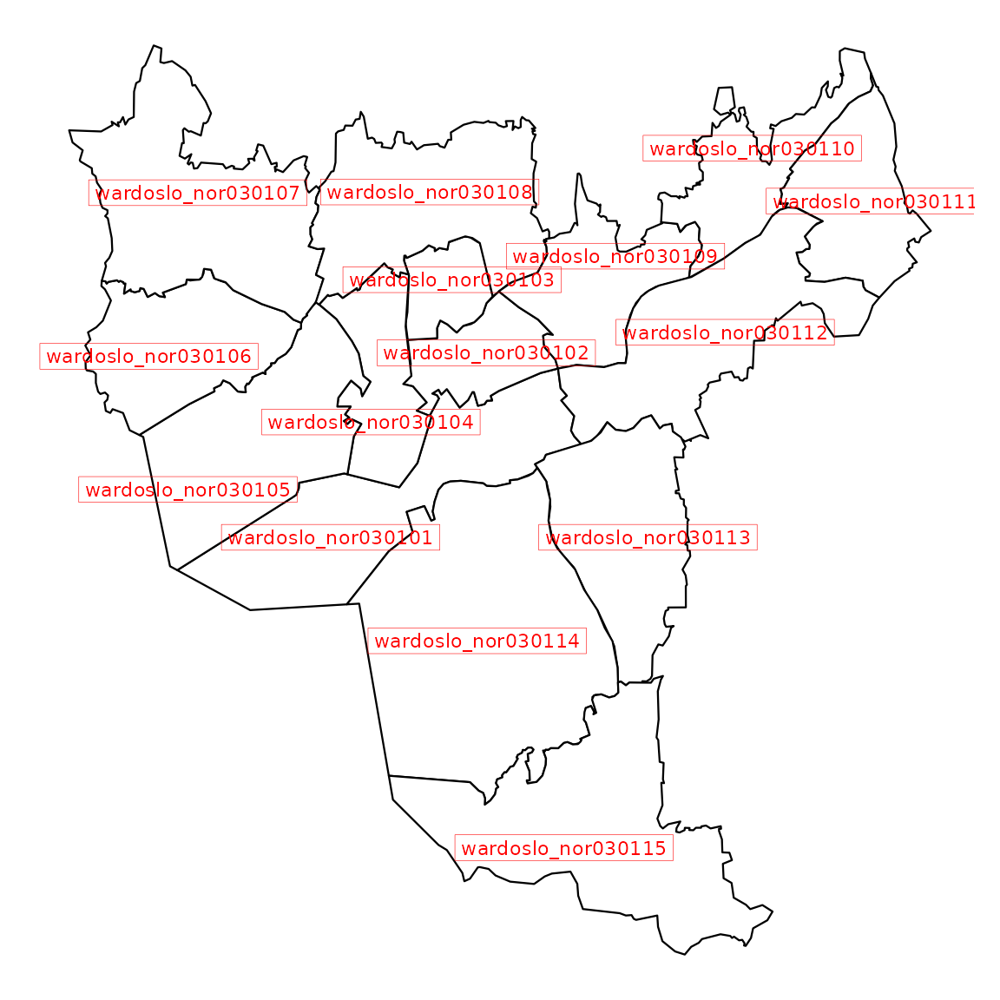
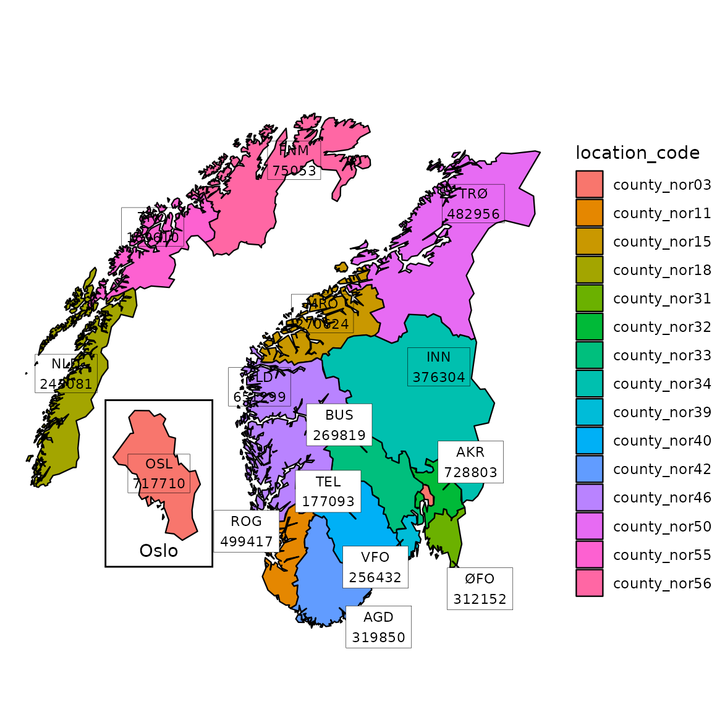
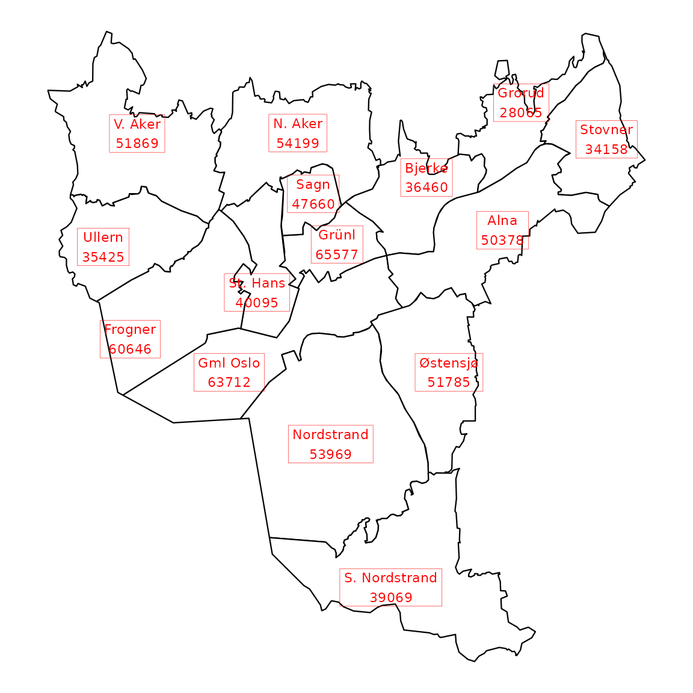

vignettes/customization.Rmd
customization.Rmd
library(csmaps)
#> csmaps 2025.8.21
#> https://niphr.github.io/csmaps/
library(ggplot2)
library(data.table)
library(magrittr)location_code
pd <- copy(csmaps::nor_county_map_b2024_split_dt)
q <- ggplot()
q <- q + csmaps::annotate_oslo_nor_map_bxxxx_split_dt()
q <- q + geom_polygon(
data = pd,
mapping = aes(
x = long,
y = lat,
group = group,
fill = location_code
),
color="black",
linewidth = 0.4
)
q <- q + theme_void()
q <- q + coord_quickmap()
q <- q + labs(title = "")
q
It is also possible to specify the color by user-defined groups. Here we show an example of assigning different (pseudo) risk level to each county.
pd <- copy(csmaps::nor_county_map_b2024_split_dt)
# assign each location a random category for different colors
location_info <- unique(pd[,c("location_code")])
location_info[,category:=rep(
c("Good","Normal","Neutral","Bad","Very Bad"),
each=3)[1:.N]
]
location_info[,category:=factor(
category,
levels=c("Good","Normal","Neutral","Bad","Very Bad")
)
]
print(location_info)
#> location_code category
#> <char> <fctr>
#> 1: county_nor03 Good
#> 2: county_nor11 Good
#> 3: county_nor15 Good
#> 4: county_nor18 Normal
#> 5: county_nor31 Normal
#> 6: county_nor32 Normal
#> 7: county_nor33 Neutral
#> 8: county_nor34 Neutral
#> 9: county_nor39 Neutral
#> 10: county_nor40 Bad
#> 11: county_nor42 Bad
#> 12: county_nor46 Bad
#> 13: county_nor50 Very Bad
#> 14: county_nor55 Very Bad
#> 15: county_nor56 Very Bad
# join the map data.table
pd[
location_info,
on="location_code",
category:=category
]
q <- ggplot()
q <- q + csmaps::annotate_oslo_nor_map_bxxxx_split_dt()
q <- q + geom_polygon(
data = pd,
mapping = aes(
x = long,
y = lat,
group = group,
fill = category
),
color="black",
linewidth = 0.4
)
q <- q + coord_quickmap()
q <- q + labs(title="")
q <- q + theme_void()
q
We can add labels of county index onto the maps. There are several
options for adding texts on a graph in ggplot2. We
recommend geom_label() to add the labels if no label
overlap occurs, otherwise we recommend using
ggrepel::geom_label_repel().
q <- ggplot()
q <- q + csmaps::annotate_oslo_nor_map_bxxxx_split_dt()
q <- q + geom_polygon(
data = pd,
mapping = aes(
x = long,
y = lat,
group = group,
fill = category
),
color="black",
linewidth = 0.4
)
q <- q + geom_label(
data = csmaps::nor_county_position_geolabels_b2024_split_dt,
mapping = aes(
x = long,
y = lat,
label = location_code
)
)
# ggrepel::geom_label_repel() for avoiding overlap
q <- q + theme_void()
q <- q + coord_quickmap()
q <- q + labs(title = "")
q
Labels can be easily added to other layouts, such as Oslo wards.
q <- ggplot(mapping = aes(x = long, y = lat))
q <- q + geom_polygon(
data = csmaps::oslo_ward_map_b2024_default_dt,
mapping = aes(group = group),
color = "black",
fill = "white",
linewidth = 0.4
)
q <- q + geom_label(
data = csmaps::oslo_ward_position_geolabels_b2024_default_dt,
mapping = aes(label = location_code),
color = "red",
size = 3,
label.size = 0.1,
label.r = grid::unit(0, "lines")
)
#> Warning: The `label.size` argument of `geom_label()` is deprecated as of ggplot2 3.5.0.
#> ℹ Please use the `linewidth` argument instead.
#> This warning is displayed once per session.
#> Call `lifecycle::last_lifecycle_warnings()` to see where this warning was
#> generated.
q <- q + theme_void()
q <- q + coord_quickmap()
q
It is convenient to use csdata package to enrich Norway
and Oslo maps with external information, such as location name and
population.
# enrich with population and location name
dpop_2024 <- csdata::nor_population_by_age_cats()[
calyear==2024 &
granularity_geo %in% "county"
]
# join, create label
labels <- copy(csmaps::nor_county_position_geolabels_b2024_split_dt)
labels[
dpop_2024,
on = "location_code",
pop_total := pop_jan1_n
]
labels[
csdata::nor_locations_names(),
on = "location_code",
location_name_short := location_name_short
]
labels[, label := paste0(location_name_short, '\n', pop_total)]
print(head(labels))
#> location_code long lat repel pop_total location_name_short
#> <char> <num> <num> <lgcl> <num> <char>
#> 1: county_nor31 11.50 59.00000 TRUE 312152 ØFO
#> 2: county_nor32 11.20 60.03851 TRUE 728803 AKR
#> 3: county_nor33 8.85 60.60000 TRUE 269819 BUS
#> 4: county_nor03 2.20 60.30000 FALSE 717710 OSL
#> 5: county_nor34 11.10 61.90000 FALSE 376304 INN
#> 6: county_nor39 10.00 59.32481 TRUE 256432 VFO
#> label
#> <char>
#> 1: ØFO\n312152
#> 2: AKR\n728803
#> 3: BUS\n269819
#> 4: OSL\n717710
#> 5: INN\n376304
#> 6: VFO\n256432
# plot
pd <- copy(csmaps::nor_county_map_b2024_split_dt)
q <- ggplot()
q <- q + csmaps::annotate_oslo_nor_map_bxxxx_split_dt()
q <- q + geom_polygon(
data = pd,
mapping = aes(
x = long,
y = lat,
group = group,
fill = location_code
),
color="black",
linewidth = 0.4
)
q <- q + ggrepel::geom_label_repel(
data = labels[repel==TRUE],
mapping = aes(x = long, y = lat, label = label),
size = 3,
label.size = 0.1,
label.r = grid::unit(0, "lines"),
min.segment.length = 0
)
q <- q + geom_label(
data = labels[repel==FALSE],
mapping = aes(x = long, y = lat, label = label),
size = 3,
label.size = 0.1,
label.r = grid::unit(0, "lines")
)
q <- q + theme_void()
q <- q + coord_quickmap()
q <- q + labs(title = "")
q
# enrich with population and location name
dpop_2024 <- csdata::nor_population_by_age_cats()[calyear==2024]
# join, create label
labels <- copy(csmaps::oslo_ward_position_geolabels_b2024_default_dt)
labels[
dpop_2024,
on = "location_code",
pop_total := pop_jan1_n
]
labels[
csdata::nor_locations_names(),
on = "location_code",
location_name_short := location_name_short
]
labels[, label := paste0(location_name_short, '\n', pop_total)]
print(head(labels))
#> location_code long lat pop_total location_name_short
#> <char> <num> <num> <num> <char>
#> 1: wardoslo_nor030101 10.72000 59.89000 63712 Gml Oslo
#> 2: wardoslo_nor030102 10.78000 59.92567 65577 Grünl
#> 3: wardoslo_nor030103 10.76683 59.93981 47660 Sagn
#> 4: wardoslo_nor030104 10.73555 59.91230 40095 St. Hans
#> 5: wardoslo_nor030105 10.66500 59.89925 60646 Frogner
#> 6: wardoslo_nor030106 10.65000 59.92500 35425 Ullern
#> label
#> <char>
#> 1: Gml Oslo\n63712
#> 2: Grünl\n65577
#> 3: Sagn\n47660
#> 4: St. Hans\n40095
#> 5: Frogner\n60646
#> 6: Ullern\n35425
q <- ggplot(mapping = aes(x = long, y = lat))
q <- q + geom_polygon(
data = csmaps::oslo_ward_map_b2024_default_dt,
mapping = aes(group = group),
color = "black",
fill = "white",
linewidth = 0.4
)
q <- q + geom_label(
data = labels,
mapping = aes(label = label),
color = "red",
size = 3,
label.size = 0.1,
label.r = grid::unit(0, "lines")
)
q <- q + theme_void()
q <- q + coord_quickmap()
q